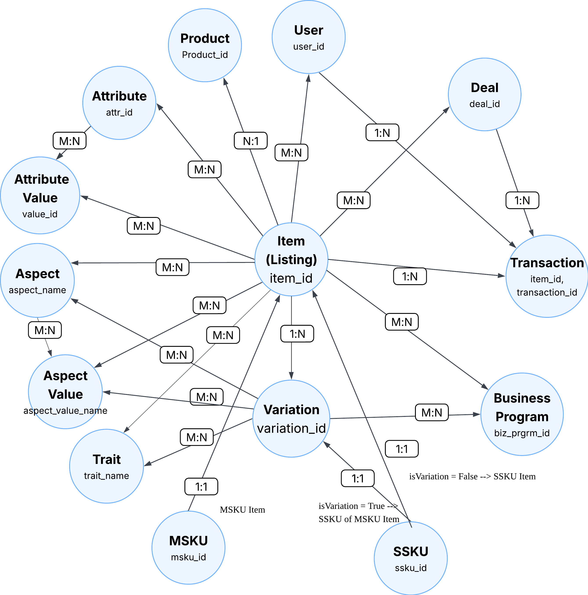

Item Domain Logical Data Model (LDM)
Overview
Item LDM is the standard, governed logical interface for eBay item-domain data, abstracting fragmented underlying physical sources to enable self-service consumption on GDS platform to support business use cases such as data engineering, analytics, and ML feature engineering.
Core Concepts
Understanding Item domain fundamentals:
-
Item, Variation, Product
Core entity hierarchy: listings (item), SKUs (variation), and catalog references (product/ePID)
-
Attributes vs Aspects
Two ways to describe items: seller-provided attributes vs SAP-processed aspects with higher quality
-
Variation Traits
SKU-level differentiators like Color, Size, Network that distinguish variations
Learn core concepts in detail →
Item Domain LDM Map
All available LDM entities in the Item domain:

New to Item LDM?
Start with item, variation, and attribute entities - they cover most common use cases.
Quick Start
Access Methods
Query via Spark SQL on DLS:
Programmatic access via Declarative Data Flow (DDF): Examples to be added.
Common Query Scenarios
Entity: item
Use case: Query title, price, category, seller, etc.
Entity: variation
Use case: Different sizes/colors of the same product
See comprehensive query examples →
Migrating from Legacy Hive Tables?
Currently using DW_LSTG_ITEM, DW_ATTR_DETAIL_VALUES, or other legacy tables? See the Migration Guide for step-by-step instructions to migrate your queries to Item Domain LDM.
LDM Catalog
| LDM Name | Type | Description | Primary Key(s) | Details |
|---|---|---|---|---|
| item | Core entity | Core listing entity | item_id |
Details → |
| variation | Core entity | Multi-SKU variations of a listing | variation_id |
Details → |
| product | Core entity | Product catalog reference (ePID) | prod_ref_id |
Details → |
| site | Lookup entity | eBay marketplace/site lookup for listing, seller, and bidder site IDs | site_id |
Details → |
| category | Lookup entity | eBay category hierarchy lookup, including meta, intermediate, and leaf categories | site_id, leaf_categ_id |
Details → |
| dw_category_groups | Lookup entity | Category grouping and rollup reference used by legacy DW/category reporting | TBD | |
| country | Lookup entity | Country lookup for item location, seller registration, and bidder registration country IDs | country_id |
Details → |
| application | Lookup entity | Listing application/tool lookup for application_id |
application_id |
Details → |
| user | Lookup entity | eBay user lookup for seller and buyer user IDs | user_id |
Details → |
| item_condition | Lookup entity | Item condition and condition rollup lookup | item_cndtn_id |
|
| listing_status | Lookup entity | Listing lifecycle status lookup for lstg_status_id |
lstg_status_id |
|
| listing_format | Lookup entity | Listing format / auction type lookup for auct_type_code |
auct_type_code |
|
| browse_node | Lookup entity | Browse node lookup for browse/navigation taxonomy references | brws_node_id |
|
| item_common_attribute_value_mapping | Relationship entity | Item-to-common-attribute/value mapping | item_id, attr_id, value_id |
Details → |
Entity Relationships
| Relationship | Type | Description |
|---|---|---|
| Item → Variation | 1:N | One item has multiple variations (e.g., different sizes/colors) |
| Item → Product | N:1 | Items can reference product catalog/ePID records |
| Item → Site | N:1 | Site IDs resolve listing site, seller registration site, and bidder registration site |
| Item → Category | N:1 | Category IDs resolve the 7-level eBay category hierarchy and category rollups |
| Item → Country | N:1 | Country IDs resolve item location, seller registration country, and bidder country |
| Item → Application | N:1 | application_id resolves the listing application/tool |
| Item → User | N:1 | slr_id resolves the seller/user identity |
| Item ↔ Attribute Value | M:N | Items are associated with specific attribute values through mapping entities |
| Item ↔ Aspect Value | M:N | Items are associated with classifier-derived aspect values |
| Variation ↔ Trait | M:N | Variations have traits like Color, Size, Material |
How to Query Relationships
1. For 1:N / N:1 Relationships
Query from the "many" side entity:
-- Example: Get variations for an item (1:N)
SELECT
v.item_id,
v.variation_id,
v.variation_sku,
v.variation_price
FROM gds.variation v
WHERE v.item_id = 123456789;
2. For M:N Relationships
Current Approach - Pre-joined denormalized mapping tables are modeled as LDM entities for direct consumption:
| Relationship | Mapping LDM Name | Primary Keys | Physical Sources | Details |
|---|---|---|---|---|
| Item ↔ Attribute Value (Common Attributes) | item_common_attribute_value_mapping | item_id, attr_id, value_id |
DW_ATTR_DETAIL_VALUES | View Details → |
| Item ↔ Attribute Value (Listing) | item_listing_attribute_value_mapping | item_id, gcs_id, vcs_id, lstg_attr_id, value_id, value_desc |
DW_ATTR_LSTG_DTL | |
| Item ↔ Attribute Value (Shipment) | item_shipment_attribute_value_mapping | item_id, gcs_id, vcs_id, shpmt_attr_id, value_id, value_desc |
DW_ATTR_SHPMT_DTL DW_ATTR_SHPMT_DTL_COLD | |
| Item ↔ Attribute Value (Fitment) | item_fitment_attribute_value_mapping | item_id, auct_end_dt, ftmnt_grp_id, ftmnt_name, ftmnt_value_text, src_ind, cmbntn_grp_id |
DW_LSTG_ITEM_FTMNT | |
| Item ↔ Attribute Value (Tags) | item_tag_attribute_value_mapping | item_id, gcs_id, vcs_id, lstg_attr_id, tag_name, tag_value_txt |
DW_ATTR_LSTG_TAG_DTL | |
| Item ↔ Attribute Value (Tax) | item_tax_attribute_value_mapping | item_id, sale_tax_rate, jrsdctn_cntry_id, jrsdctn_tx |
LSTG_SALE_TAX | |
| Item ↔ Picture | item_picture_mapping | item_id, trait_name |
LSTG_ITEM_PIC | |
| Item ↔ Aspect Value | item_aspect_value_mapping | item_id, aspect_name, aspect_value_name |
ITEM_ASPCT_CLSSFCTN_SAP | |
| Variation ↔ Aspect Value | variation_aspect_value_mapping | variation_id, aspect_name, aspect_value_name |
VRTN_ASPCT_CLSSFCTN_SAP | |
| Variation ↔ Trait | variation_trait_mapping | variation_id, trait_name |
LSTG_ITEM_VRTN_TRAIT |
-- Example: Get item attributes using mapping table
SELECT
i.item_id,
i.auct_titl AS title,
m.attr_id,
m.value_desc
FROM gds.item i
JOIN gds.item_common_attribute_value_mapping m ON i.item_id = m.item_id
WHERE i.item_site_id = 0
AND m.attr_id = 1000
LIMIT 100;
Future Vision - The long-term vision is to abstract M:N relationships into more intuitive entity-relationship models with dynamic materialization on DDF. Please refer to the Modeling Strategy document for details.